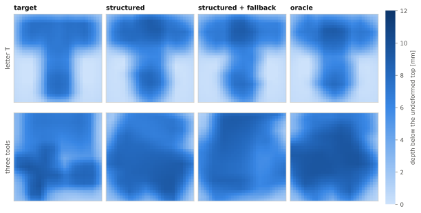
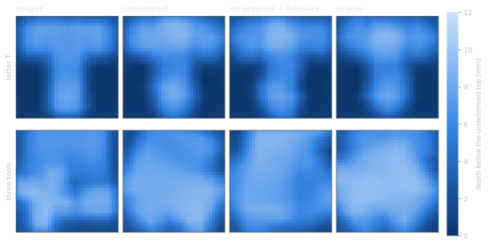

A Letter, and a Choice of Tool
The two targets
Section titled “The two targets”Both are made like the main targets, by a hidden demonstration in the simulator (The Oracle), so zero error is reachable.
| target | demonstration | tool given to the planner | cap on actions | height-map RMSE of the untouched block |
|---|---|---|---|---|
| letter T | five 10 mm presses: three in a row for the bar, two for the stem | flat press | 7 | 4.76 mm |
| three tools | a 7 mm roll, 90 mm long, 35 mm beyond the centre; a cross stamped 11 mm deep and turned 17°; a 10 mm press off to one side | none | 5 | 6.27 mm |
For the second target the planner runs its search once with each tool, keeps the best prediction of the three and executes it (run_episode): three times the budget of a decision, and the tool can change at every step. A tool change is a change of compiled model with the state carried over unchanged, which is why the three tools share one state layout (Scene and Tools).
Three planners were run: the structured model, the structured ensemble with the oracle fallback of Asking the Simulator (disagreement trigger at the median threshold of M4, 0.12 mm), and the oracle itself. The oracle is slow on these targets, 33 s per decision on the T and 155 s on the three-tool target, so it was run for one seed only; the learned planners for three.
Results
Section titled “Results”| target | planner | reached: height-map RMSE | initial error left | Chamfer | EMD | actions | simulated primitives for planning | planning time per decision |
|---|---|---|---|---|---|---|---|---|
| T | structured | 0.67 ± 0.06 mm | 14.0 % | 1.28 mm | 1.48 mm | 7 | 0 | 0.9 s |
| T | structured + fallback | 0.65 ± 0.07 mm | 13.7 % | 1.16 mm | 1.33 mm | 6.7 | 3 | 4.5 s |
| T | oracle (one seed) | 0.66 mm | 13.9 % | 1.35 mm | 1.56 mm | 5 | 576 | 33 s |
| three tools | structured | 1.54 ± 0.10 mm | 24.6 % | 2.56 mm | 4.24 mm | 5 | 0 | 2.6 s |
| three tools | structured + fallback | 1.31 ± 0.04 mm | 20.9 % | 2.56 mm | 4.47 mm | 5 | 48 | 15.8 s |
| three tools | oracle (one seed) | 1.97 mm | 31.4 % | 3.12 mm | 4.89 mm | 5 | 1,440 | 155 s |
Chamfer and EMD are means over the seeds. The planning time of the fallback includes the time to load and run the oracle rollouts when it fires.


The letter T
Section titled “The letter T”All three planners end at the same error, about 0.66 mm, a seventh of the initial error. The T is legible in all of them.
None of them finds the five clean presses of the demonstration. The structured planner’s first press goes to the maximum depth, 14 mm, at the bar where the demonstration pressed 10 mm, because one deep press removes the most error at once. The following presses get shallower (10.4, 9.4, 8.5, 7.5, 6.5 mm) as the planner works around the over-deep spot it made first. This is the same greedy trade as in the slab of The Oracle: clay pressed too far cannot be raised again, and a one-step planner does not know that.
With the structured model the planner gets the same result as with the simulator at 1/36 of the time per decision. The fallback fired once in the three episodes: on this target the ensemble rarely disagreed enough to call the simulator, and the result is the structured planner’s.
Three tools
Section titled “Three tools”This target is harder, and it is the one target where the oracle planner was worse than the learned planners: 1.97 mm against 1.31 to 1.64 mm for the six learned runs. The oracle run is one seed and the learned runs are three each, so this is not evidence that a learned model plans better than the simulator. It is evidence that greed decides more than accuracy on this target. The oracle’s first roll was the best single action available, across the middle of the block; its second was 13.3 mm deep, deeper than anything in the demonstration (11 mm at most). After that, three more actions lowered the error only from 2.29 to 1.97 mm.
Every planner chose the roller first, as the demonstration did, and none reproduced the stamped cross. The stamp is the right tool for one small region of the target, and a greedy planner picks the tool that reduces the whole-map error most in one step. Removing the band of material along the far edge is worth more than any one stamp, so the stamp only comes in late, if at all: never in the three structured runs, and once in two of the three fallback runs (lowering the error by 0.12 mm in one, and leaving it unchanged to 0.01 mm in the other).
The fallback improved the result in every one of the three seeds (1.34 against 1.64, 1.33 against 1.58, 1.26 against 1.40 mm). It fired twice per episode and used 48 simulated primitives, against 1,440 for the oracle planner. When it fires, the best candidates are compared by their simulated outcome rather than the predicted one, and that can also change which tool is picked up. Over the thirty episodes of Does the Fallback Pay?, re-ranking pays about a point of the initial error on average, but the disagreement is no guide to when: on this target it fired because the planner was rolling, which makes the members disagree whatever the ranking.
The tool changes, executed
Section titled “The tool changes, executed”In the planner, a tool change is free and instant: each tool is its own compiled model, and the state, plastic strain included, moves between them unchanged. To show that the plan is executable as it stands, the first fallback episode (roller, roller, stamp, roller, press) was replayed with the changes carried out by the arm. The three tools stand on a rack beside the clay. Before every action whose tool differs from the one held, the arm puts the held tool back on its pedestal and picks up the next one, as an automatic tool changer does. Every motion is simulated and tracked by the same servos as the primitives: straight lines near the rack and the clay, joint-space moves at a safe height between them. The docking itself is kinematic (the tool is attached when the flange sits on it), and the rack is visual only, so the clay is the planner’s own physics. The replay ends at 1.34 mm, the error the planner reported, after three tool changes and 54 s of simulated time.
The planner does not know that a tool change costs time: it would pick the stamp for one stroke and the roller again for the next as readily as it keeps the roller. A cost per change in the planner’s objective is the obvious extension.
A house from three tools
Section titled “A house from three tools”The two targets above were not designed so that each tool had its own part. The house was: on the 245 mm block of the smiley, a roof of two 6 mm rolls meeting at an apex, a window from the cross stamp (10 mm, four panes), and a door from a 12 mm flat press. That is four actions in the hidden demonstration. The planner is not told the tools; it picks one at every step, with eight actions allowed. Untouched block: 3.17 mm. One planner seed:
| planner | height-map RMSE reached | initial error left | tools, in order | planning time per decision | simulated primitives |
|---|---|---|---|---|---|
| hybrid | 0.84 mm | 26 % | R P S S R P P P | 88 s | 192 |
| oracle | 0.86 mm | 27 % | R R P R R P S S | 388 s | 2,304 |
| prior only | 0.97 mm | 30 % | R P S R S P P P | 2.4 s | 0 |
| structured | 0.99 mm | 31 % | R R P S S P P S | 11.7 s | 0 |
| GNN | 1.07 mm | 34 % | R P P S S R S S | 9.5 s | 0 |
| U-Net | 1.35 mm | 43 % | R P P S P S S P | 0.8 s | 0 |
R roller, P press, S stamp. Every planner used all three tools, and every planner used all eight actions. The pattern is the same in all six, though the order differs:
- The roof. The first action is always a long roll (85 to 100 mm, 4.8 to 6.0 mm deep) through the roof region. It is the best first step every planner found, and it does not follow either slope exactly. The rest of the roof is then filled in with whatever lowers the error most at that step: two more rolls by the oracle, a roll and a stamp by the hybrid and the prior, stamps and presses by the others.
- The door. Every run presses it within its first three actions, 8.6 to 11.3 mm deep, within 0 to 8 mm of its centre.
- The window. Every run puts the cross stamp on it, 2 to 11 mm from its centre. The hybrid and the prior-only planner stamp it straight away. The other four first lower the window with a roll or a flat press, then stamp it later.
None reaches the demonstration’s zero. The first five actions remove 1.7 to 2.1 mm of error and the last three only 0.1 to 0.3 mm. This is the same limit as on the targets above. A greedy step takes the biggest single gain and patches around it afterwards, and once the main pieces are placed only small corrections are left. The hybrid is level with the oracle at under a quarter of its time per decision and a twelfth of its simulations. Next comes the prior alone, with nothing learned. The U-Net again transfers worst to the bigger block.
The hybrid’s episode, with its four tool changes carried out by the arm from the rack as above. The replay ends at 0.84 mm, as planned, after 68 s of simulated time:
What this shows, and what it does not
Section titled “What this shows, and what it does not”- The pipeline handles a target of seven actions and a tool chosen at every step with no change to the code: the tool is one more discrete variable of the search, and the state layout makes switching free.
- On both targets the learned planners reach the oracle’s error, or better, at a small fraction of its cost.
- Neither target is solved. Both stop at 14 % and 21 to 31 % of the initial error, and the reason is the one-step greedy search, not the models. A planner that looked two or three actions ahead would be the next thing to try, and the learned models are what makes that affordable: a two-step search with the oracle would take tens of minutes per decision.
- Three seeds of the learned planners and one of the oracle are enough to see these patterns and not enough to rank them precisely.
Two further stretch goals of the brief were not attempted: folding a sheet (MuJoCo’s paper model was downloaded and inspected, but not wired into the bench) and a second arm. See Limits.